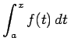

Es ist nicht immer möglich, Integrale durch elementare Funktionen auszudrücken, auch wenn der Integrand eine elementare Funktion ist. In vielen Fällen lassen sich für solche nichtelementaren Integrale Reihenentwicklungen angeben. Läßt sich der Integrand in eine im Intervall [a,b] gleichmäßig konvergierende Reihe entwickeln, so erhält man aus dieser durch gliedweise Integration eine ebenfalls gleichmäßig konvergente Reihe für das bestimmte Integral .